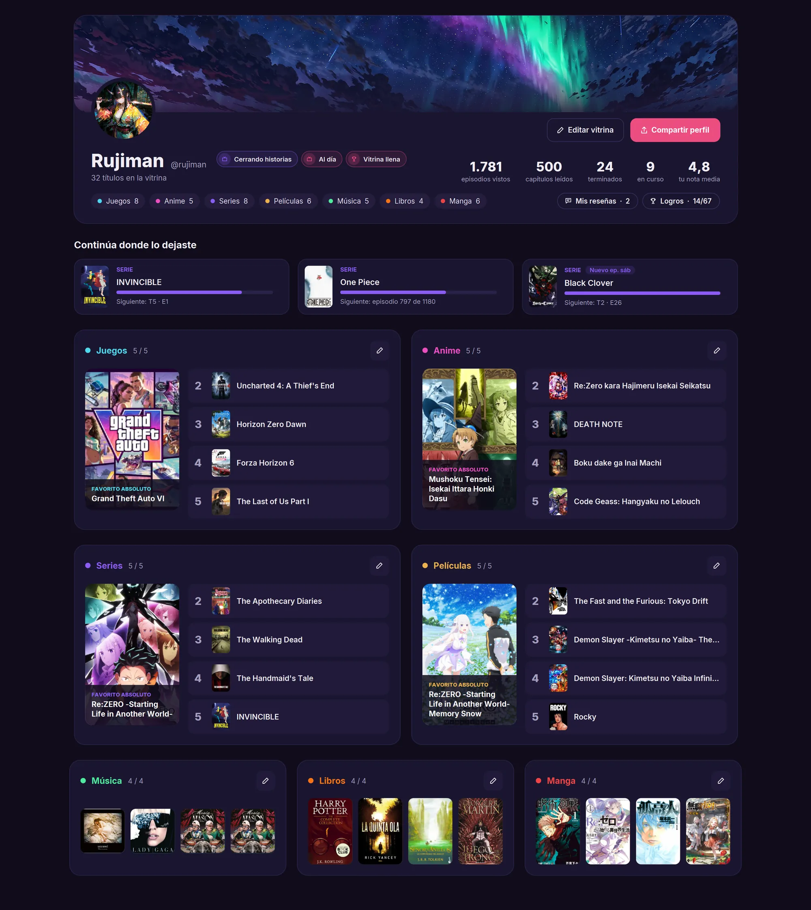
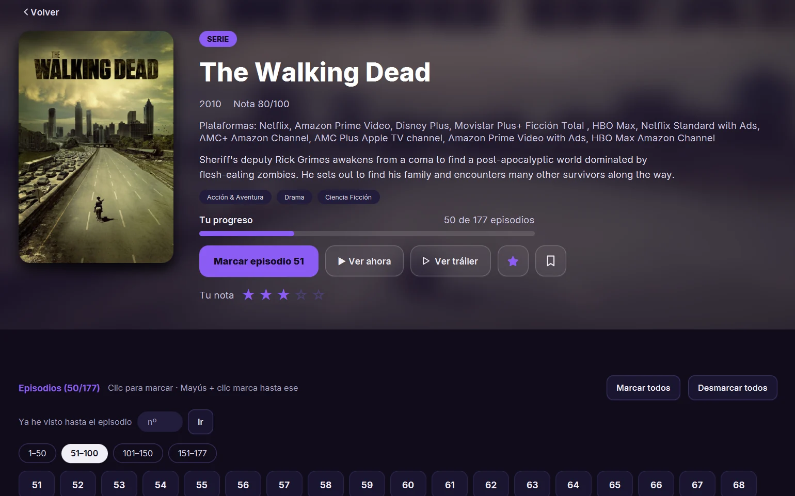

Un perfil para presumir
Tu pantalla de inicio es tu vitrina: tu favorito absoluto de cada cosa en grande y tu top 5 al lado. Elige portada, ordénalo arrastrando y expórtalo como imagen para subirlo a donde quieras.

Guarda series, películas, anime, manga, juegos, música y libros en un solo sitio. Marca por dónde vas, puntúa lo que terminas y monta un perfil con tus favoritos para enseñárselo a tus amigos.
¿Usas Linux? Descarga la versión para Linux.
MediaVerse es una app de ordenador para Windows y Linux. Abre esta página en tu PC para descargarla.
El tráiler llega muy pronto.
Buscas en la app y los datos llegan de las mejores bases de datos de cada cosa.
Tu pantalla de inicio es tu vitrina: tu favorito absoluto de cada cosa en grande y tu top 5 al lado. Elige portada, ordénalo arrastrando y expórtalo como imagen para subirlo a donde quieras.

Marca episodios y capítulos con un clic, o con Mayús + clic todos hasta uno. Lo que tienes a medias aparece en Inicio para seguir donde lo dejaste.

MediaVerse detecta en qué plataformas puedes ver cada serie, película o anime en España. Pulsas «Ver ahora», eliges y se abre directamente allí. Si aún no está en ninguna, tienes el tráiler a un clic, y en la música puedes escuchar 30 segundos sin salir de la app.
¿Dónde quieres verlo?
Disponible en España
Pendiente, en curso y terminado, con filtros por tipo y carpetas que creas tú. Para meter algo en una carpeta, arrástralo encima.

Cuando sale una versión nueva aparece un botón. Lo pulsas y listo.
Todo se guarda en tu carpeta de Documentos. Nada se sube a ningún servidor.
Viene todo dentro. Descomprimes, abres y funciona.
MediaVerse-portable.zip, unos 45 MB.
Clic derecho, «Extraer todo», en la carpeta que quieras: Escritorio, Documentos o un USB.
La primera vez te guía para conectar tus claves gratuitas de TMDB y Twitch. Se hace una sola vez.
MediaVerse-linux.tar.gz, unos 50 MB.
tar xzf MediaVerse-linux.tar.gz
./MediaVerse/bin/MediaVerse. La primera vez te guía con las claves. Necesita un escritorio con GTK 3, que traen Ubuntu, Mint o Fedora.
No. MediaVerse es gratis y las claves que te pide también lo son.
Las películas, series y juegos salen de TMDB y de Twitch (IGDB). Esos servicios dan acceso gratis, pero a cada persona con su clave. El asistente de la app te lleva a la página, te dice qué copiar y comprueba que funciona.
En tu ordenador, en Documentos/MediaVerse. Puedes copiar esa carpeta como copia de seguridad o pasarla a otro PC. Al actualizar no se pierde nada.
Por ahora, Windows y Linux. El móvil está en los planes.
Pasa con las apps que no están firmadas por una empresa. Pulsa «Más información» y luego «Ejecutar de todas formas».